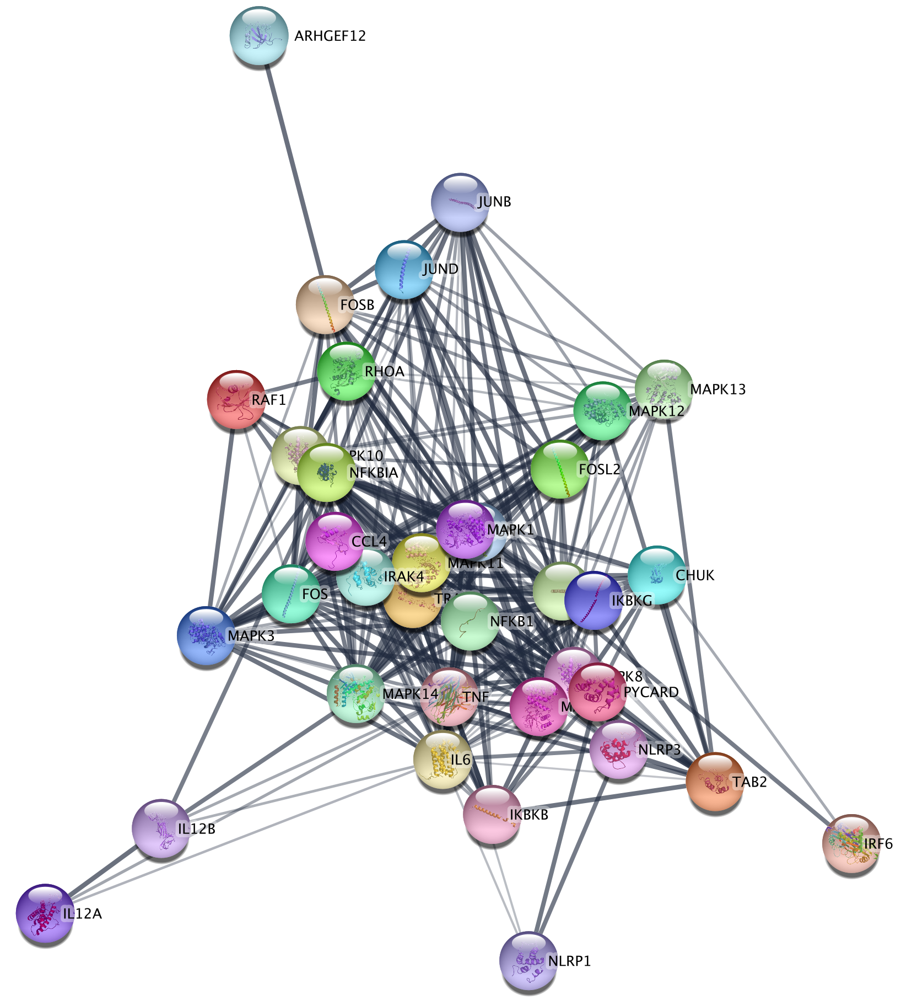

Pathway Figure Gene Set Analysis
By using a combination of optical character recognition, machine learning and manual curation, gene sets have been extracted from published pathway figures. 32,000 of these sets are available in NDEx, and can be used directly in Cytoscape.
This protocol starts with one of these gene sets from a published pathway figure and describes how to create a network, visualize data and perform functional enrichment.
If you don't already have the stringApp installed, you can install it from the Cytoscape App Store or from Cytoscape via

Import Pathway Figure Gene Set
- Navigate to Published Pathway Figure Analysis Set at NDEx.
- Find the network named PMC6678134__cancers-11-01028-g003.jpg and click on it. The page will display the genes in the set on the left and the published figure they were extracted from on the right.
- Save the figure by right-clicking on it and selecting
Save Image As.. . - To open the gene set into Cytoscape, click the
Open in Cytoscape button in the lower right.
open-in-cytoscape.png
STRING Query
The network concists of a set of nodes, but no edges. We will use the STRING database to add edges for the nodes from known interactions.
- In the
Node Table , select the top entry in thename column, hold down the shift key and select the last entry. Copy the contents to the clipboard. - In the
Network tab of theContol Panel , select STRING protein query in the drop-down and paste in the contents of the clipboard. - Click the search icon to search using the default parameters.
The resulting network contains the nodes from our pathway gene set, and interactions between them with an evidence score of 0.4 or greater.
Data Integration
Next, we can import experimental data from a TCGA dataset, comparing gene expression between two subtypes of ovarian cancer. Since the STRING network is a protein-protein network, it is annotated with protein identifiers, namely Uniprot and Ensembl protein. The data from TCGA has NCBI Gene identifiers (formerly Entrez), so before importing the data we are going to use the ID Mapper functionality in Cytoscape to map the network to NCBI Gene.
- In the
Node Table , right-click on the column header of thedisplay name column and clickMap column... . - In the
ID Mapping interface, select Human asSpecies , HGNC asMap from and Entrez asTo . Click OK to continue. - IDMapper displays a report of how many identifiers were mapped. Make note of this information as it impacts all downstream analysis; If the mapping was unsuccessful, downstream analysis will be as well.
Data Integration
- Download a local copy of TCGA-Ovarian-MesenvsImmuno_data.csv.
- Load the TCGA-Ovarian-MesenvsImmuno_data.csv file under
File menu, selectImport → Table from File.... - Make sure you select the new Entrez Gene column as the Key column for Network to match the correct column with the key column of the data.
- To complete the import, click
OK . Two new columns of data will be added to theNode Table .
Visualization
Next, we will create a visualization of the imported data on the network. For more detailed information about how to create visualizations, see the Visualizing Data tutorial.
- In the
Style tab of theControl Panel , switch the style from STRING style v1.5 to default in the drop-down at the top. - Change the default node shape to ellipse and check Lock node width and height.
- Set the default node fill color to light gray.
- Set the default
Border Width to 2, and make the defaultBorder Paint dark gray. - For node
Fill Color , create a continuous mapping forlogFC , with the default ColorBrewer yellow-orange-red shades gradient. - For
Node Label , set a passthrough mapping fordisplay name .
Visualization
Applying a
STRING Enrichment
The STRING app has built-in enrichment analysis functionality, which includes enrichment for GO Process, GO Component, GO Function, InterPro, KEGG Pathways, and PFAM.
- In the STRING tab of the
Results Panel , click theFunctional Enrichment button. Keep the default settings. - When the enrichment analysis is complete, a new tab titled
STRING Enrichment will open in theTable Panel .
STRING Enrichment
The STRING app includes several options for filtering and displaying the enrichment results. The features are all available at the top of the
- At the top left of the STRING enrichment tab, click the filter icon
 . Select
. Select GO Process and check theRemove redundant terms check-box. Then click OK. - Next, we will add a split donut chart to the nodes representing the top terms by clicking on
 .
.